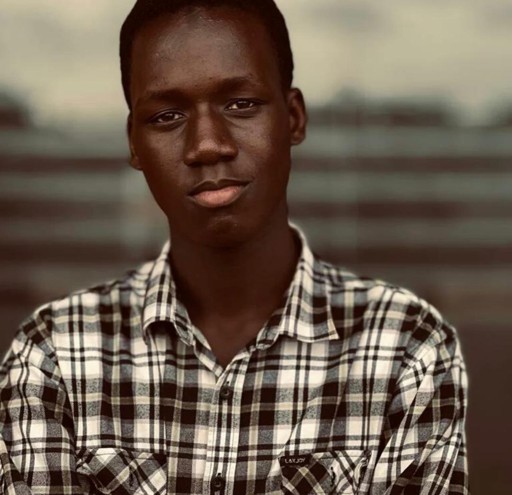

Session 1 · Introduction
Topic About me
I'm Atugonza Abdul Rahim
I enjoy creating content, developing ideas and learning something useful every day. I like finding simple ways to make a message interesting and meaningful.
Ideas · creativity · content creation
I'm Atugonza Abdul Rahim. I enjoy creating content, developing ideas and learning how to share stories in clear and engaging ways.

Session 1 · Introduction
I enjoy creating content, developing ideas and learning something useful every day. I like finding simple ways to make a message interesting and meaningful.
Session 2 · Content creation
Creating content starts with noticing an idea worth sharing. I enjoy planning what to say, choosing words and visuals, then shaping everything into a story people can understand and connect with.
Session 3 · Reflection
Content creation has taught me to keep practicing and stay open to feedback. Each new project helps me communicate more clearly, try a fresh approach and improve the next thing I create.